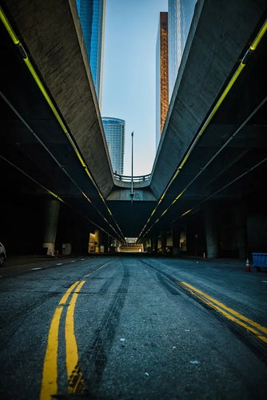
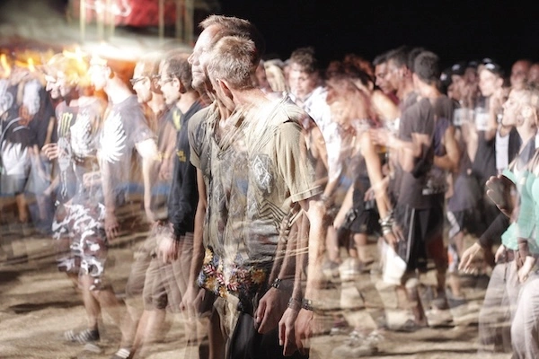
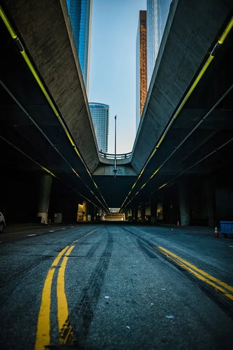
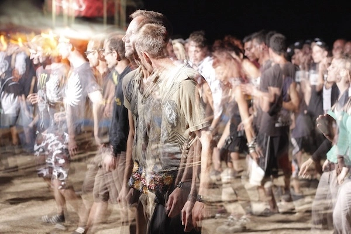
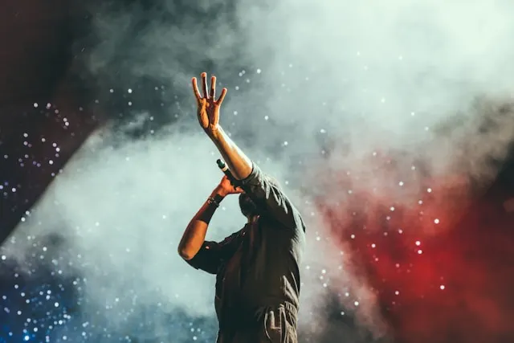
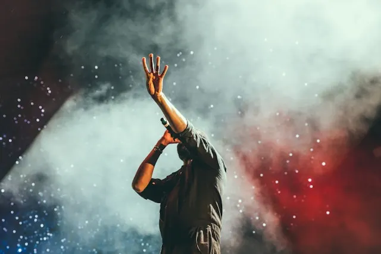

Resumen
Esta página es un proyecto de la clase HTML y CSS del Máster de desarrollo web y aplicaciones de la UOC.
Todo el contenido que ves de imagenes es de uso gratuito y lo puedes encontrar en UNSPLASH
Cualquier comentario es bienvenido: jrammas@uoc.edu
También puedes ver el código en repositorio github, sientete libre de copiarlo y hacer con él lo que quieras.
¿Por qué Chase and Status?
¿Y por qué no? Chase and Status han revolucionado muchos aspectos de la música, incluyendo la forma en que creamos y consumimos.
Chase and Status son un ejemplo perfecto de cómo la tecnología puede influir en la música. Su sonido único es el resultado de la combinación de diferentes géneros y técnicas de producción, muchas de las cuales han sido posibles gracias a los avances en la tecnología musical.
Así que la próxima vez que escuches a Chase and Status, recuerda que estás escuchando no solo a los artistas, sino también a la tecnología que ha hecho posible su música.
Baddadan
La canción "Baddadan" es una colaboración entre Chase & Status y Bou. Cuenta con las voces de IRAH, Flowdan, Trigga y Takura. El tema es una melodía de drum and bass de alta energía con un estribillo pegadizo y una línea de bajo potente. Ha sido un éxito en la escena del drum and bass y se ha tocado en festivales y clubes de todo el mundo.
 



 
